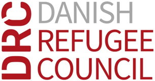
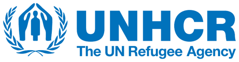
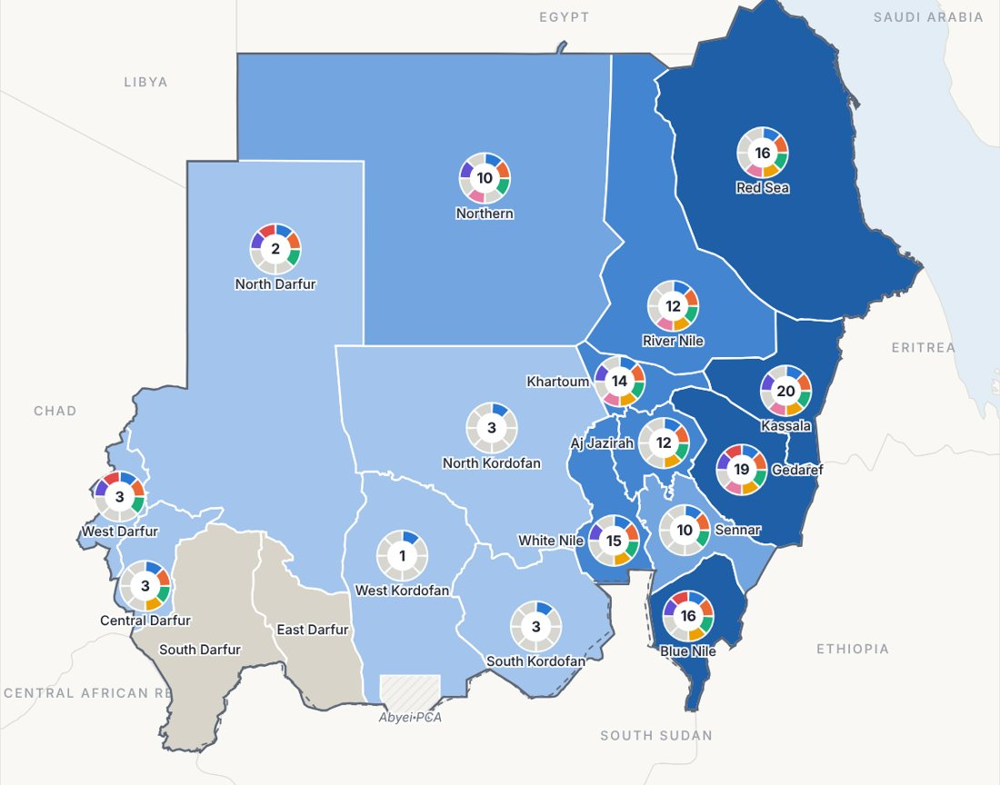

Durable Solutions in Sudan
Helping people affected by displacement rebuild safe, dignified and self-reliant lives.
Since April 2023, conflict has driven one of the largest displacement crises in the world. More people are now returning, but millions remain displaced. Durable solutions help them rebuild safe and self-reliant lives, whether they return home, integrate where they are, or settle elsewhere in Sudan.
Sudan at a glance
The latest figures on displacement and returns across Sudan.
IDPs are falling as returns rise
Where people have crossed to
Where IDPs are living
Sources: IOM DTM, Sudan Displacement and Return Snapshot (10), 18 October 2026; UNHCR Sudan, Overview of Refugees and Asylum-seekers, 30 September 2026. ?
Durable solutions for IDPs
“A durable solution is achieved when internally displaced persons no longer have any specific assistance and protection needs that are linked to their displacement and can enjoy their human rights without discrimination on account of their displacement.”IASC Framework on Durable Solutions for Internally Displaced Persons, 2010
Achieving a durable solution is a gradual process. It is not only about where people live, but whether they can live in safety, earn an income, access services and take part in community life on an equal footing with their neighbours.
The choice of pathway belongs to displaced people themselves. It should be voluntary, informed, and made in safety and dignity.
Three pathways, and where Sudan stands
Why people return
How far returns have come, by state
The eight criteria
How do we know whether displaced people have found a lasting solution? The IASC Framework sets out eight criteria. Together, they help partners in Sudan plan their support and measure progress. Select a criterion to read it.
Top 10 states
IDPs hosted and returnees, by state
Stories of solutions
Women, children and persons with disabilities across Sudan are rebuilding their lives. These published stories show what support for lasting solutions looks like on the ground.
No stories match this filter yet.
Stories and photos are by the organizations named. Select a headline to read the full story, with photo credits, on their website.
How we work
The Durable Solutions Unit (DSU) is hosted by the United Nations Resident Coordinator’s Office in Sudan and supports coordination at national and state level.
![]() NDSWG
NDSWG
Sets the national direction and brings partners together.
 ADSWGs
ADSWGs
Turn national direction into local action in Aj Jazirah, Blue Nile, Gedaref, Kassala and White Nile.
![]() DSU
DSU
Secretariat to both groups, with data, analysis and field missions.
The NDSWG is co-chaired by:


See the working groups, co-chairs and documents
Get in touch
Organizations working on durable solutions in Sudan are welcome to contact the secretariat to learn more about the working groups or to share their work.
Key documents
Reference documents, tools and products for partners working on durable solutions in Sudan. Documents not yet published online are available from the secretariat.
Solutions Mapping

Solutions Mapping
Find out who is doing what, and where, to help people affected by displacement move toward lasting solutions. The dashboard maps projects that build self-reliance, such as boreholes instead of water trucking, or seed distribution instead of food distribution.
Open Solutions Mapping